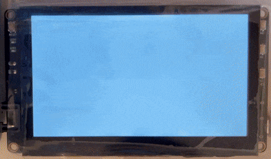

WASM on Embedded Systems (RTOS)
Real-Time Operating System
Han Wu, University of Exeter, the UK
C/C++ Libraries
(OpenCV, Eigen, etc)
Chrome V8 (WASM Runtime)
Chrome (V8 Runtime)
Intel i7 (1.9GHz) - 16GB RAM

ARM Linux (WASM3 Runtime)
Cortex-A7 (1.2GHz) - 64MB RAM

RT-Thread (WAMR Runtime)
Cortex-M4 (120MHz) - 640KB RAM

Arduino (WASM3 Runtime)
ESP32 (240MHz) - 520KB RAM
GUI (HDMI, LCD)
wasi-filesystem
wasi-sockets
wasi-digital-io
wasi-i2c
wasi-spi
Web Assembly System Interface (WASI) Support